Data lifecycle

Data lifecycle
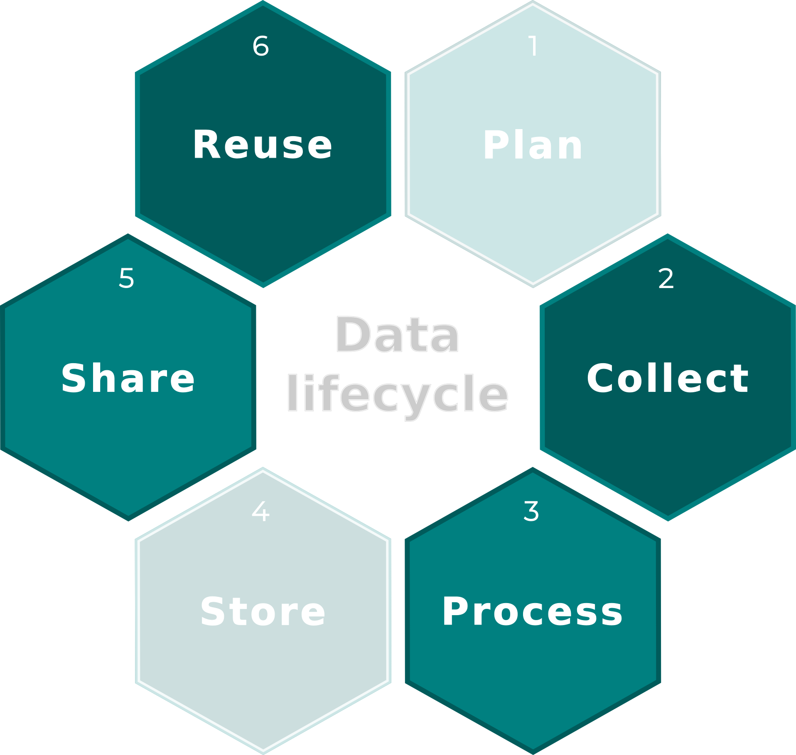
Table of contents
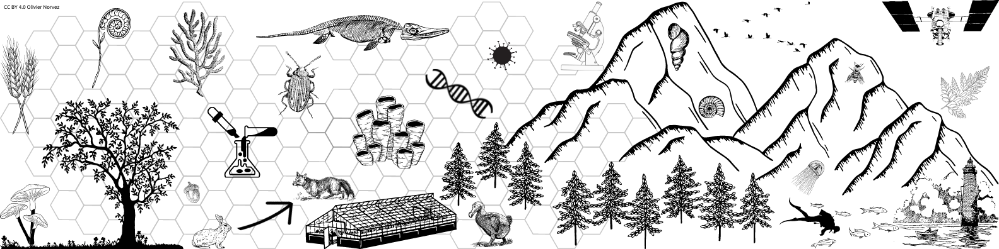
Reminder of the context and the issues
VRE : Kesaco ?
Process
Resources
Virtual Research Environment : reminder of the context and the issues
Virtual Research Environment : reminder of the context and the issues
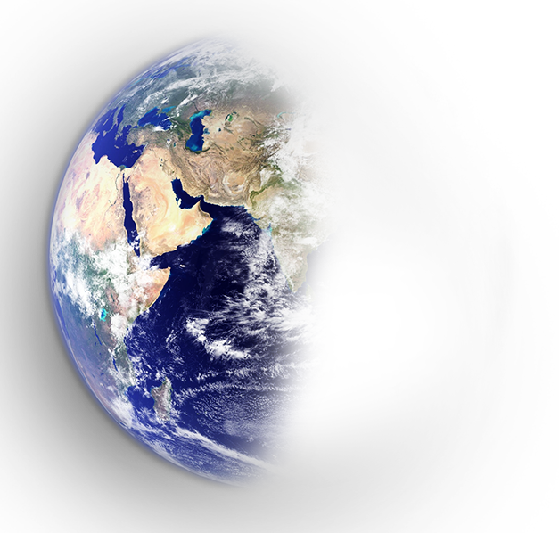
- Earth is a complex system composed of subsystems involving physical, chemical and biological environments, characterized by interacting processes over a broad continuum of time and space scales.
- Necessity to have technical frameworks & workflows to get, manipulate, process, and analyse FAIR research objects (data, metadata and code sources, …) from different sources (providers, format, standards)
We talk about Virtual Research Environment - VRE
Virtual Research Environment : kesaco ?
Virtual Research Environment : kesaco ?
VRE, VL, SG…. ?
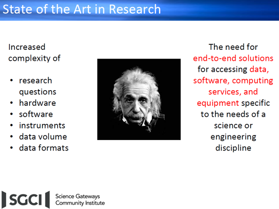
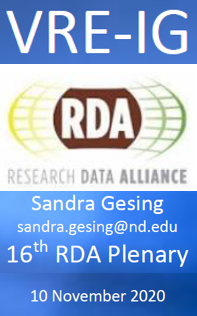
Virtual Research Environment : kesaco ?
VRE, VL, SG…. ?
“Research done through distributed global collaboration enabled by the internet, using very large data collections, terascale computing resources and high performance visualization” (Sir John Taylor – 2001)
“A VRE comprises a set of online tools and other network resources and technologies interoperating with each other to facilitate or enhance the processes of research practitioners within and across institutional boundaries” JISC definition
“Virtual Research Environments are innovative, web-based, community-oriented, comprehensive, flexible, and secure working environments conceived to serve the needs of modern science» Candela et al. 2013
- Web based
- Serve the needs of researchers communities (VRCs)
- Open and flexible
Virtual Research Environment : kesaco ?
VRE, VL, SG…. ?
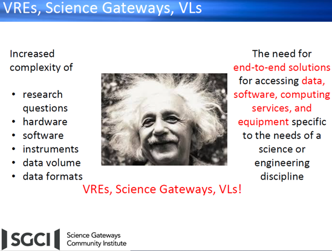
Virtual Research Environment : kesaco ?
VRE, VL, SG…. ?
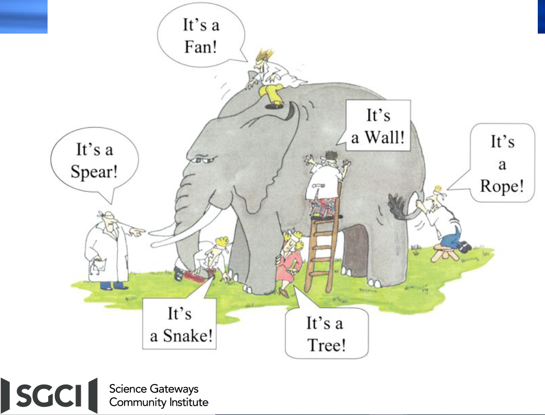
Virtual Research Environment : kesaco ?
VRE, VL, SG…. ?
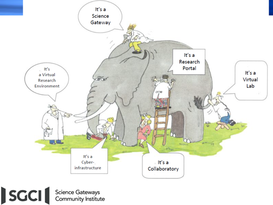
Virtual Research Environment : kesaco ?
VRE, VL, SG…. ?
Virtual Research Environments (VREs) are increasingly being used to support a more dynamic approach to collaborative working in systematics and taxonomy. Researchers who are not co-located are seeking to work dynamically together at various scales from local to international. These shared infrastructures are funded as VREs in Europe, Virtual Laboratories (VLs) in Australia and Science Gateways (SGs) in the USA and all have similar objectives.
Virtual Research Environment : kesaco ?
VRE, VL, SG…. ?
Virtual Research Environments (VREs) are increasingly being used to support a more dynamic approach to collaborative working in systematics and taxonomy. Researchers who are not co-located are seeking to work dynamically together at various scales from local to international. These shared infrastructures are funded as VREs in Europe, Virtual Laboratories (VLs) in Australia and Science Gateways (SGs) in the USA and all have similar objectives.
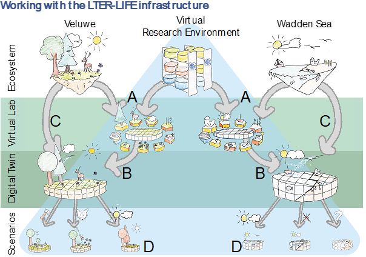 For more information: LTER-Life
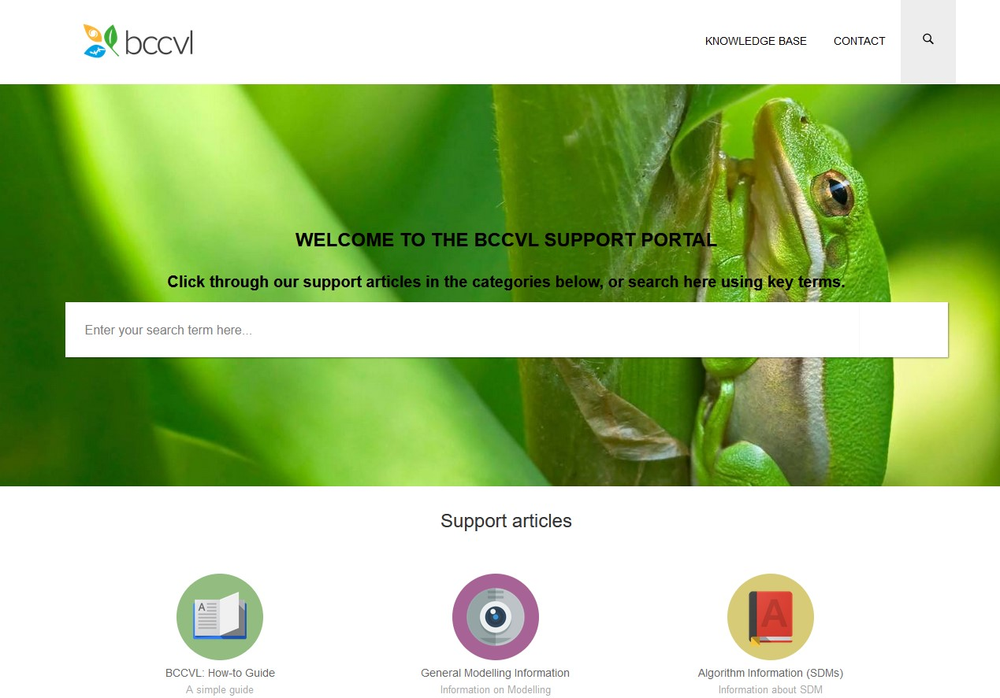 For more information: BCCVL
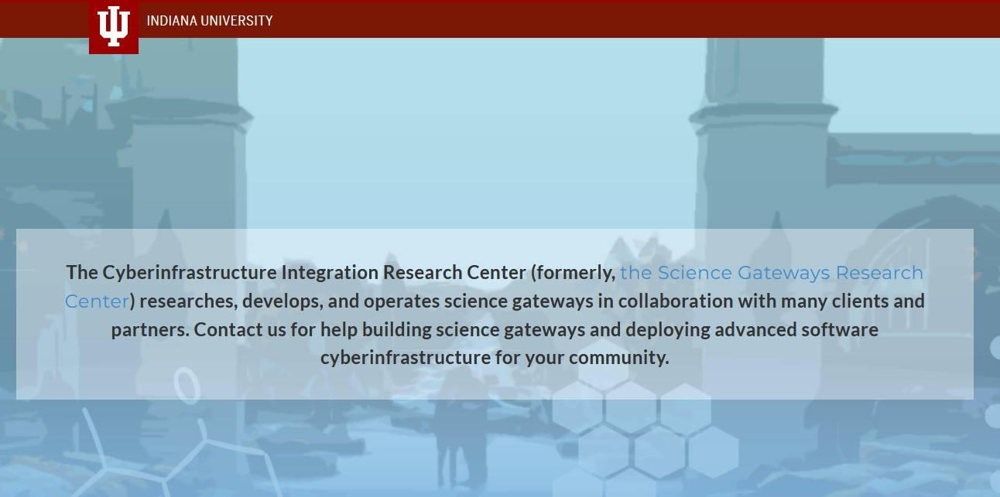 For more information: The science gateways research center
Virtual Research Environment : kesaco ?
Key aspects
Virtualisation (hiding complexity from the user);
access to useful resources such as datasets, software, computing power, instruments/detectors (the latter for control as well as data taking) and scholarly publications (including grey literature technical reports etc.) as well as collaboratively with other persons and organisations;
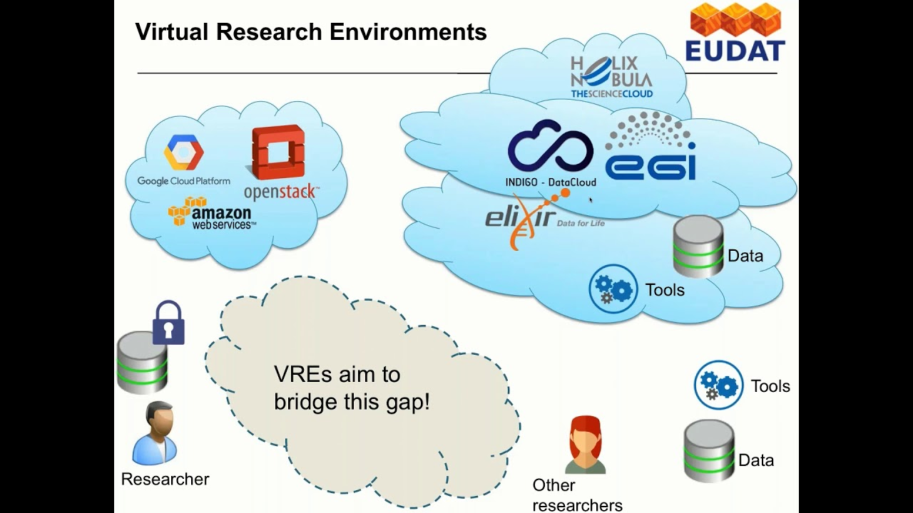
For more information: EMBL-EBI
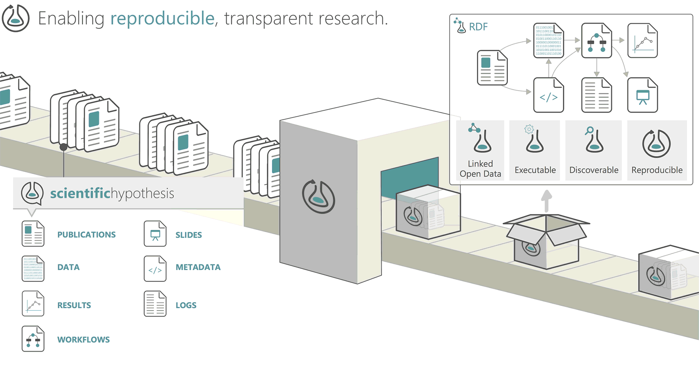
For more information: Research Objects.org
Virtual Research Environment : kesaco ?
Key aspects
Virtualization (hiding complexity from the user);
access to useful resources such as datasets, software, computing power, instruments/detectors (the latter for control as well as data taking) and scholarly publications (including grey literature technical reports etc.) as well as collaboratively with other persons and organisations;
interoperability across resources;
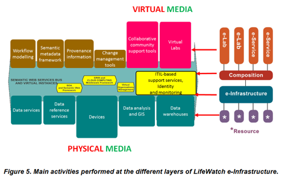 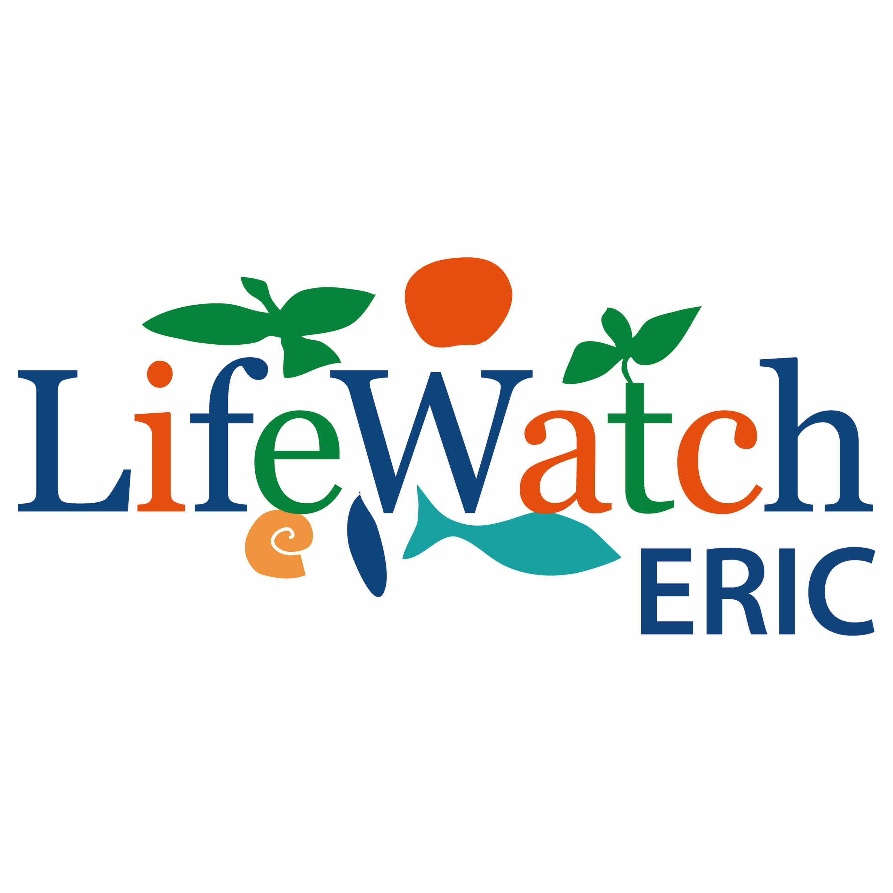
For more information: LifeWatch ERIC
Virtual Research Environment : kesaco ?
Key aspects
Virtualisation (hiding complexity from the user);
access to useful resources such as datasets, software, computing power, instruments/detectors (the latter for control as well as data taking) and scholarly publications (including grey literature technical reports etc.) as well as collaboratively with other persons and organisations;
interoperability across resources;
support for the ‘researcher workflow’ from research idea (and checking the literature etc.) through observations/experiments to publication and subsequent discussion with citation and accreditation (maybe including management functions such as proposals and reporting to funders).
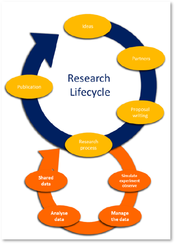
For more information: Jisc
Virtual Research Environment : kesaco ?
Key aspects
Virtualization (hiding complexity from the user);
access to useful resources such as datasets, software, computing power, instruments/detectors (the latter for control as well as data taking) and scholarly publications (including grey literature technical reports etc.) as well as collaboratively with other persons and organisations;
interoperability across resources;
support for the ‘researcher workflow’ from research idea (and checking the literature etc.) through observations/experiments to publication and subsequent discussion with citation and accreditation (maybe including management functions such as proposals and reporting to funders).
support for workflow composition (or even autonomic composition) of (2) and ideally deployment on virtualized resources (e.g. GRIDs, CLOUDs);
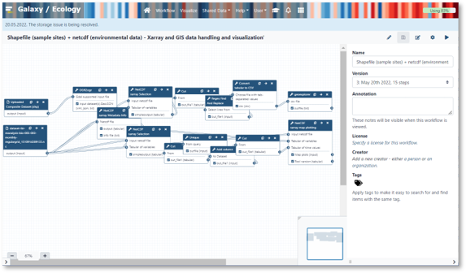
Virtual Research Environment : kesaco ?
Example of the Galaxy Project
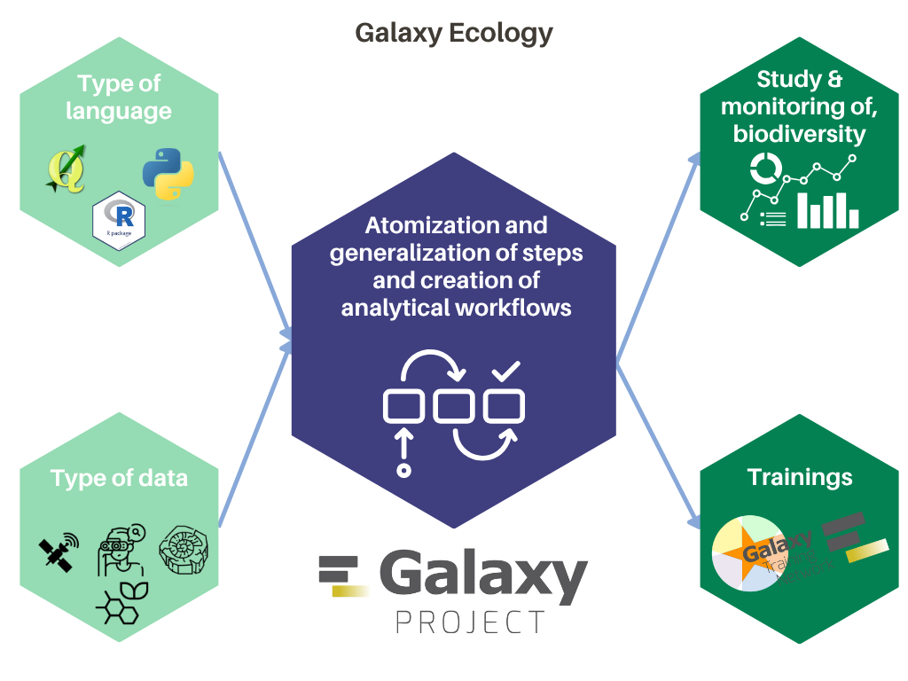
For more information: Galaxy-Ecology & Galaxy Earth system
Virtual Research Environment : process
Virtual Research Environment : process
Choose the scale !
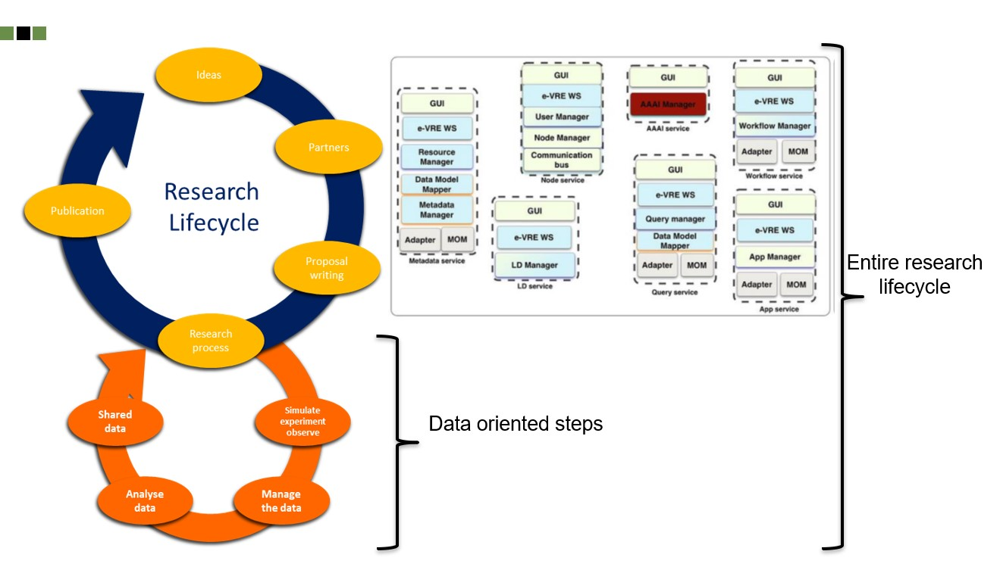
Virtual Research Environment : process
Then compose
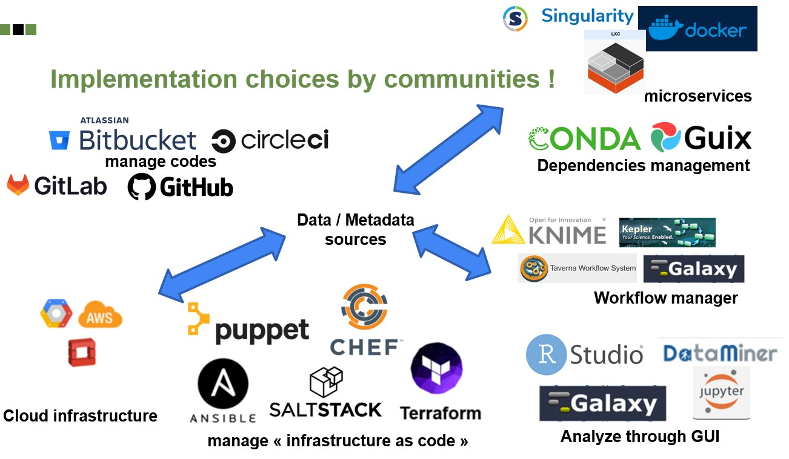
Virtual Research Environment : process
issues
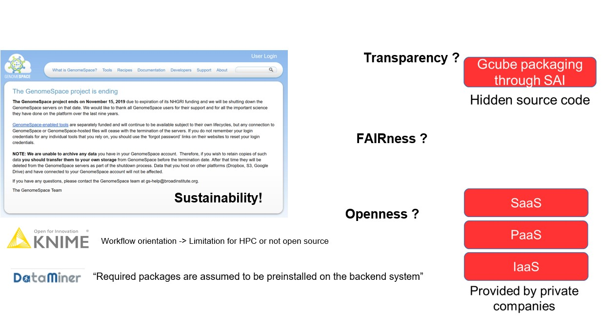
Virtual Research Environment : process
Personal vision
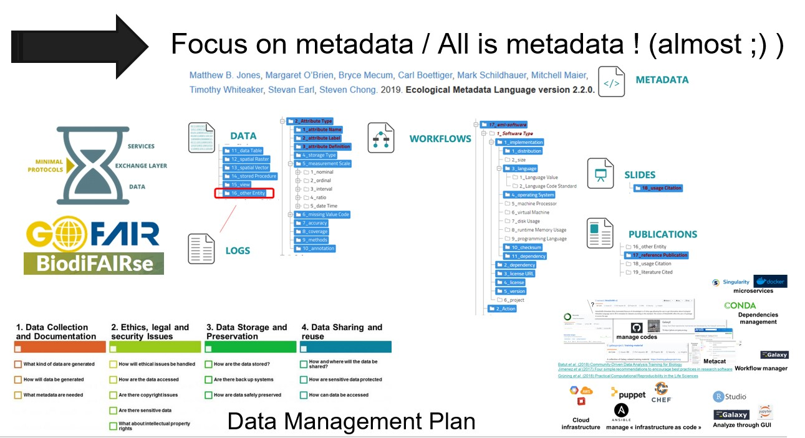
Virtual Research Environment : resources
Virtual Research Environment : resources
Collaboration oriented tools
Built on existing platform :
Examples of specific VRE framework
OpenDreamkit for mathematic
Parthenos for Humanities
Phenomenal on-demand VRE for metabolomics
Apache Airavata software framework
Scientific articles
A global biodiversity observing system to unite monitoring and guide action Gonzalez A. et al., 2023
National biodiversity data infrastructures: ten essential functions for science, policy, and practice Güntsch et al., 2024
Building essential biodiversity variables (EBVs) of species distribution and abundance at a global scale Kissling W.D. et al., 2018
PERFICT: A Re-imagined foundation for predictive ecology Mcintire E.J.B. et al., 2022
Cyberinfrastructure for sourcing and processing ecological data Recknagel F. 2023.
Guidance framework to apply good practices in ecological data analysis: Lessons learned from building Galaxy-Ecology Royaux et al., 2024
Designing a Platform for Projecting and Protecting Global Biodiversity Urban M.C. et al., 2021
BONUS
BONUS : GAIA Data project use case
- Earth is a complex system composed of subsystems involving physical, chemical and biological environments, characterized by interacting processes over a broad continuum of time and space scales.
- Necessity to have technical frameworks & workflows to get, manipulate, process, and analyse FAIR research objects (data, metadata and code sources, …) from different sources (providers, format, standards)
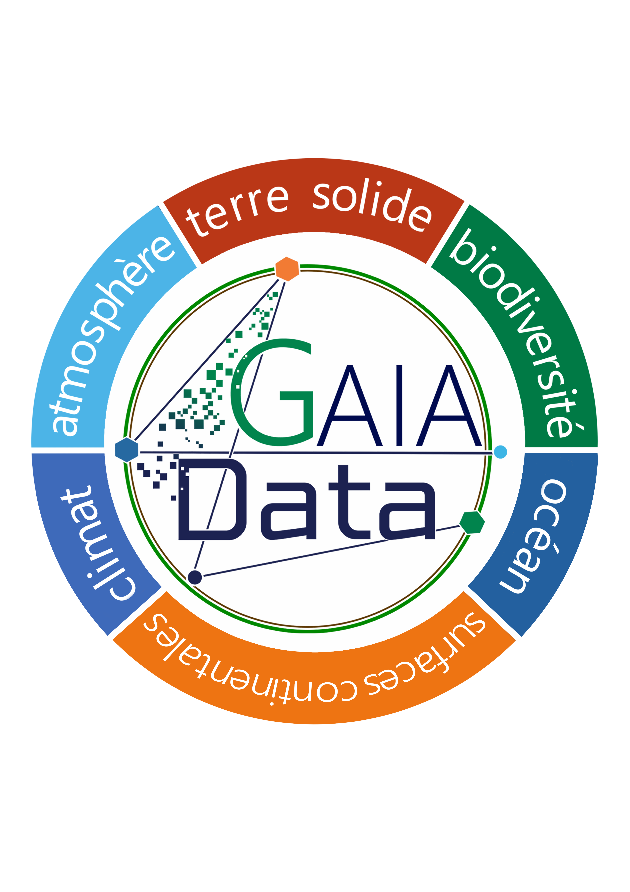 
The GAIA Data project aims to develop and implement an integrated and distributed platform of services and data for the observation, modeling and understanding of the Earth system, biodiversity and the environment.
::: ::::
BONUS : GAIA Data project use case
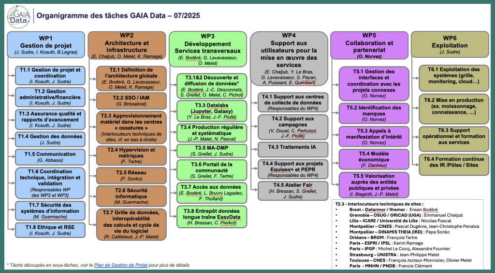
BONUS : GAIA Data project use case
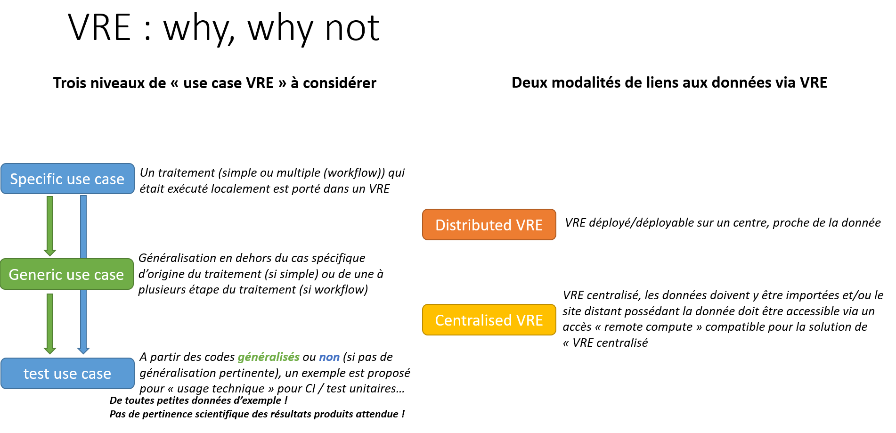
BONUS : GAIA Data project use case